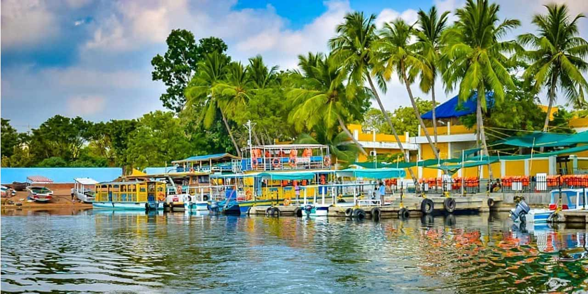

The Taj Mahal is an ivory-white marble mausoleum on the south bank of the Yamuna river in the Indian city of Agra. It was commissioned in 1632 by the Mughal emperor, Shah Jahan (reigned from 1628 to 1658), to house the tomb of his favourite wife, Mumtaz Mahal.The tomb is the centrepiece of a 17-hectare (42-acre)complex, which includes a mosque and a guest house, and is set in formal gardens bounded on three sides by a crenellated wall. Construction of the mausoleum was essentially completed in 1643 but work continued on other phases of the project for another 10 years. The Taj Mahal complex is believed to have been completed in its entirety in 1653 at a cost estimated at the time to be around 32 million rupees, which in 2015 would be approximately 52.8 billion rupees (U.S. $827 million). The construction project employed some 20,000 artisans under the guidance of a board of architects led by the court architect to the emperor, Ustad Ahmad Lahauri.
Pondicherry is the capital city of The Union Territory of Puducherry and is one of the most popular tourist destinations in South India. A French colony until 1954, this coastal town retains a number of colonial buildings, churches, statues, and systematic town planning, as well as urban architecture of the local Tamil style. As such the town has been dubbed "The Europe of India". The town struggles to preserve what little remains of the ambiance once created by this unique mix of cultural heritage.[1] It nevertheless draws tourists from around the world and from across India. Recently after the advent of the internet and social media, Pondicherry has also become a popular weekend destination, which can be reached easily from the nearby cities such as Chennai and Bangalore, principally because lower taxation on alcoholic beverages makes drinking in the Union Territory enclave much less expensive than in neighboring states.

Tourism is one of an economic contributor to the union territory of Ladakh in Northern India. The union territory is sandwiched between the Karakoram mountain range to the north and the Himalayas to the south and is situated at the height of 11,400 ft. Ladakh is composed of the Leh and Kargil districts. The region contains prominent Buddhist sites and has an ecotourism industry.Historic Ladakh consists of a number of distinct areas (mainly under Indian rule), including the fairly populous main Indus valley, the more remote Zanskar (in the south) and Nubra valleys (to the north over Khardung La in the Ladakh mountain range, a high motorable pass at 5,359 metres (17,582 ft)), the almost deserted Aksai Chin (under Chinese rule) and the predominantly Shi'ite Muslim Kargil and Suru valley areas in the west (Kargil being the second most important town in Ladakh). Historically populated by the Ladakhi people, continued immigration and preferential treatment to Kashmiris by the J&K government have led to demographic changes in the Ladakh region.